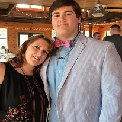
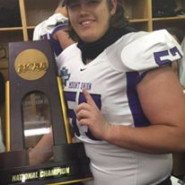
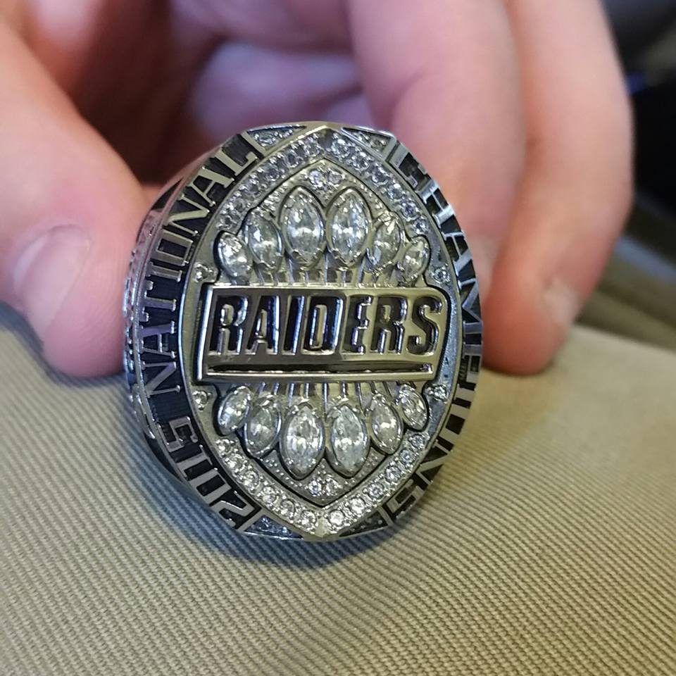
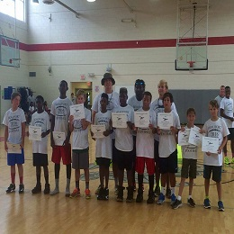

About Me
   
My name is Tyler Rentz and I'm currently a junior Multi-Platform Software Development major at the University of Mount Union . I am also a offensive lineman on the football team and I'm minoring in Political Science. Even though I go to college in Ohio I'm actually from Beaufort, SC. I decided to go to college so far away because I like to get out of my comfort zone and experience new things.... like snow. My freshman year at Mount Union I was lucky enough to be appart of the football team when we won the DIII National Championship. Being appart of such a great football team, instilled in me a great work ethic that I try and take into everything I do. In my freetime I enjoy being outside, I'm an avid fisherman, hunter, and golfer. I also like working with kids and have been involved in a couple of summer camps. Every year I coach a football camp at my highschool and I also teach a camp for Gifted and Talented students in the school district. Right now I believe that the place to be in the tech industry is working on apps so thats what I'm looking to get a job doing. This year I entered the CDCA Mobile App Competition where I designed and created a scheduling app for students. Also this year I worked in a small group to develop an app for a professor in the Athletic Training department that made recording data much easier for a study he was involved in. you can find both of these apps on the Favorite Projects page.